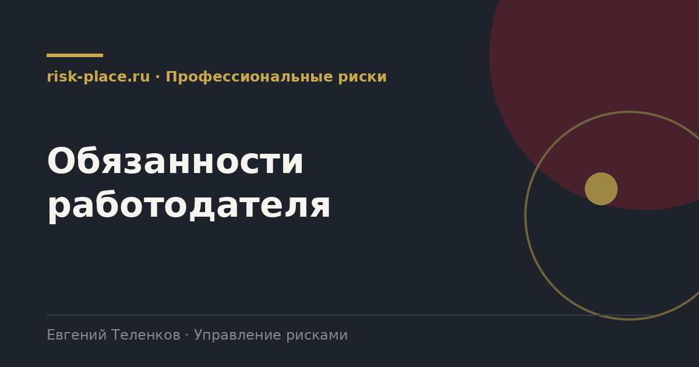

Главная · Библиотека · Профессиональные риски · Обязанности работодателя
Библиотека · Профессиональные риски
Перечень обязанностей короткий, но каждая проверяется отдельно и по каждой нужен документ.

| Обязанность | Подтверждающий документ |
|---|---|
| Выявление опасностей | Перечень опасностей по рабочим местам, документы обхода и опроса работников |
| Оценка рисков | Приказ, карты оценки, обоснование метода, состав комиссии |
| Снижение рисков | План мероприятий, отметки о выполнении, подтверждение результативности |
| Информирование | Листы ознакомления, материалы инструктажей, информационные листы на рабочих местах |
| Учет при разработке инструкций | Инструкции по охране труда со ссылками на выявленные опасности |
| Функционирование системы | Положение о системе управления охраной труда, политика, документы по процедурам |
Нарушение государственных нормативных требований охраны труда влечет ответственность по статье 5.27.1 Кодекса об административных правонарушениях. Составы дифференцированы, отдельно выделены необеспечение проведения специальной оценки условий труда, допуск работника без обучения и медосмотра, необеспечение средствами индивидуальной защиты.
Отсутствие оценки профессиональных рисков квалифицируется как нарушение требований охраны труда. Повторное нарушение влечет более суровые санкции, вплоть до административного приостановления деятельности и дисквалификации должностного лица. Отдельно следует помнить, что при расследовании несчастного случая отсутствие оценки риска по реализовавшейся опасности почти всегда попадает в перечень причин.
Порядок восстановительных действий отработан и укладывается в два-три месяца для среднего предприятия. Сначала приказом организуется работа и утверждается метод. Затем проводится выявление опасностей, начиная с наиболее опасных участков, а не по алфавиту подразделений. Затем оценка и оформление карт. Параллельно готовится или актуализируется положение о системе управления охраной труда.
Пытаться закрыть весь объем одним днем не стоит. Комплект документов, датированный одной датой на две тысячи рабочих мест, вызывает у проверяющего понятные вопросы, а работники при опросе подтвердят, что никто ни у кого ничего не спрашивал.
Частые вопросы
Одна форма для любого вопроса
Расскажем о ближайших датах, предложим формат под ваш состав участников и назовем порядок бюджета.
Предпочитаете почту — напишите на info@risk-place.ru. Адрес: Москва, улица Скаковая, 32с2.
 risk-
risk-